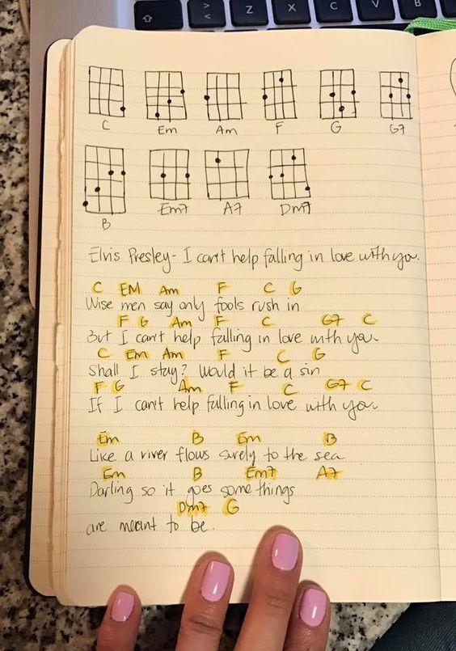

Song Writing
The image below shows an example of a simple was to write a guitar song so that it is easy to visualize and go back when you want to play it again. You can see a list of the chords used at the top with finger placements on the strings for each corresponding chord. Underneath, you have all the lyrics and the chord written above where it is played.
